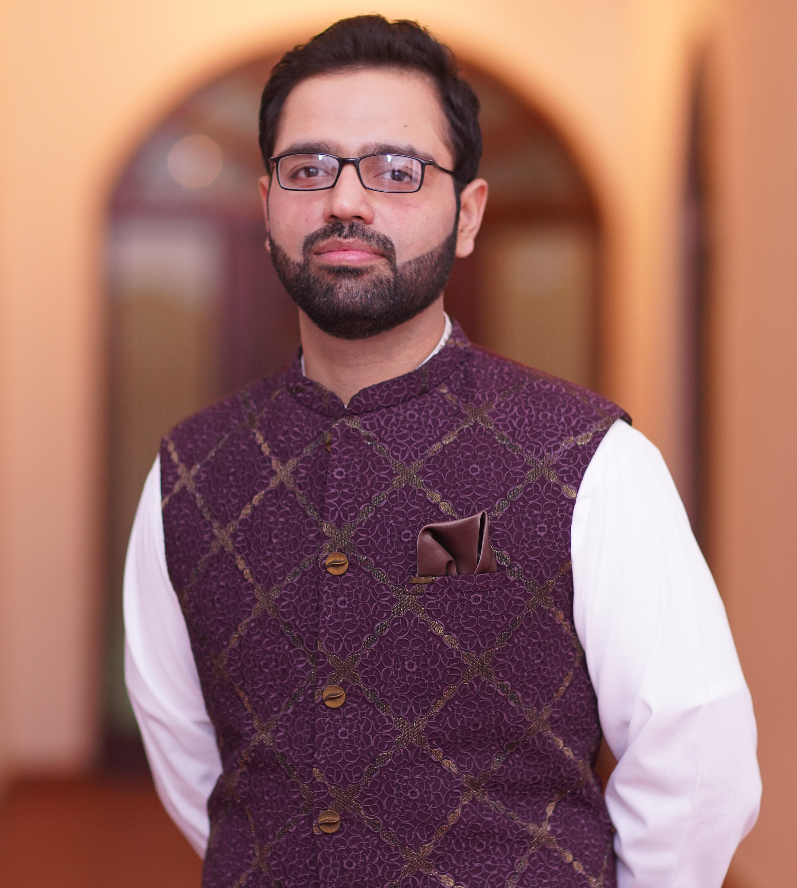

|
I am a Ph.D. candidate in the ECE department at UC San Diego, advised by Professor Michael Yip. My research revolves around robot learning for planning and control. I develop reinforcement learning and planning algorithms inspired from the human cognitive process to enable machines safely interact with their environments, and solve practical navigation and manipulation problems. Previously, I completed my M.S. in Engineering at Osaka University, where I worked with Professor Hiroshi Ishiguro. During my MS, I was fortunate to be supported by the MEXT schorlarship. I did a B.S. in Electrical Engineering from NUST. CV / Google Scholar / GitHub / Twitter |
 |
|
|
|
- I gave a talk on challenges in multi-task learning and meta-learning (slides here, video here) at the IAS Workshop on New Directions in Optimization Statistics and Machine Learning.
- At NeurIPS 2019, I gave an invited talk on Meta-Learning and Memorization (slides here, video here) at the Bayesian Deep Learning Workshop
- At RLDM 2019, I gave an invited talk on Reinforcement Learning for Robots (slides here).
- At CVSS 2019, I gave an invited lecture on Deep Visuomotor Learning (slides here).
- At RSS 2019, I gave invited talks in the workshops on Simulation to Real World Transfer (slides here), the workshop on Task-Informed Grasping (slides here), and the workshop on Women in Robotics (slides here)
- At ICLR 2019, I gave invited talks at the Task-Agnostic RL Workshop (slides here, video here), the workshop on Learning from Limited Labeled Data (slides here, video here).
- In May 2019, I gave a talk at the GRASP Seminar at University of Pennsylvania (slides here).
- At NeurIPS 2018, I gave invited talks at the Continual Learning Workshop (slides here), the workshop on Learning to Model the Physical World (slides here), and the workshop on Spatiotemporal Modeling (slides here).
- In September 2018, I gave a 3-minute talk at EmTech (video here)
- In July 2018, I gave a talk at Google DeepMind with Sergey Levine on meta-learning frontiers. (slides here)

|
Ahmed Qureshi, Jiangeng Dong, Austin Choe, Michael C. Yip IEEE Robotics and Automation Letters, 2020 [project page] [bibtex] |

|
Ahmed Qureshi, Yinglong Miao, Anthony Simeonov, Michael C. Yip IEEE Transaction on Robotics, 2020 [project page] [bibtex] |

|
Ahmed Qureshi, Jacob J Johnson, Yuzhe Qin, Taylor Henderson, Byron Boots, Michael C. Yip International Conference on Representation Learning (ICLR), 2020 [project page] [bibtex] |

|
Ahmed Qureshi, Byron Boots, Michael C. Yip International Conference on Representation Learning (ICLR), 2019 [project page] [bibtex] |

|
Ahmed Qureshi, Anthony Simeonov, Mayur J. Bency, Michael C. Yip International Conference on Robotics and Automation (ICRA), 2019 [project page] [bibtex] |

|
Mayur J. Bency, Ahmed Qureshi, Michael C. Yip International Conference on Intelligent Robots and Systems (IROS), 2019 [project page] [bibtex] |

|
Ahmed Qureshi, Michael C. Yip International Conference on Intelligent Robots and Systems (IROS), 2018 [project page] [bibtex] |

|
Zahid Tahir, Ahmed Qureshi, Yasar Ayaz, Raheel Nawaz Robotics and Autonomous Systems, 2018 [bibtex] |

|
Ahmed Qureshi, Yutaka Nakamura, Yuichiro Yoshikawa, Hiroshi Ishiguro Neural Networks, 2018 [bibtex] |

|
Ahmed Qureshi, Yutaka Nakamura, Yuichiro Yoshikawa, Hiroshi Ishiguro International Conference on Robotics and Automation (ICRA), 2017 [bibtex] |

|
Ahmed Qureshi, Yutaka Nakamura, Yuichiro Yoshikawa, Hiroshi Ishiguro International Conference on Humanoid Robots (Humanoids), 2016 [bibtex] |

|
Ahmed Qureshi, Yasar Ayaz Autonomous Robots, 2016 [bibtex] |

|
Ahmed Qureshi, Yasar Ayaz Robotics and Autonomous Systems, 2015 [bibtex] |
|
|